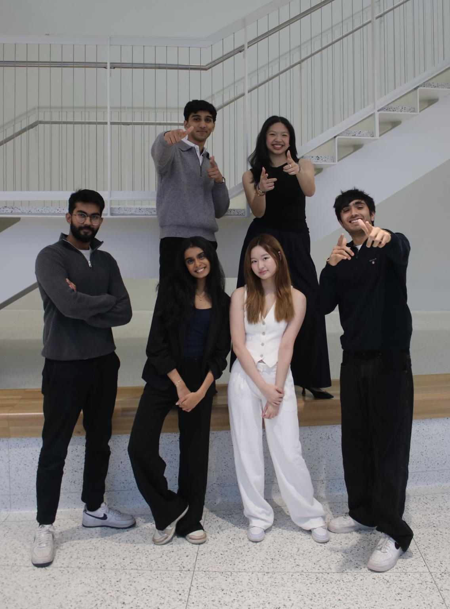
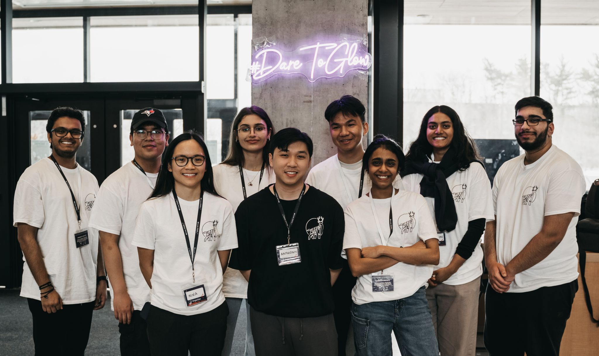
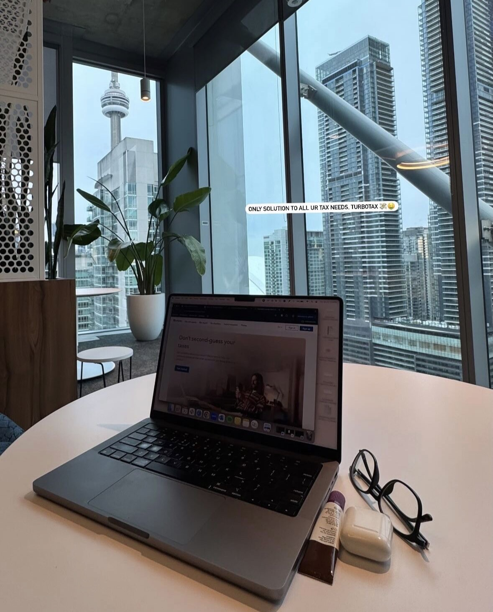
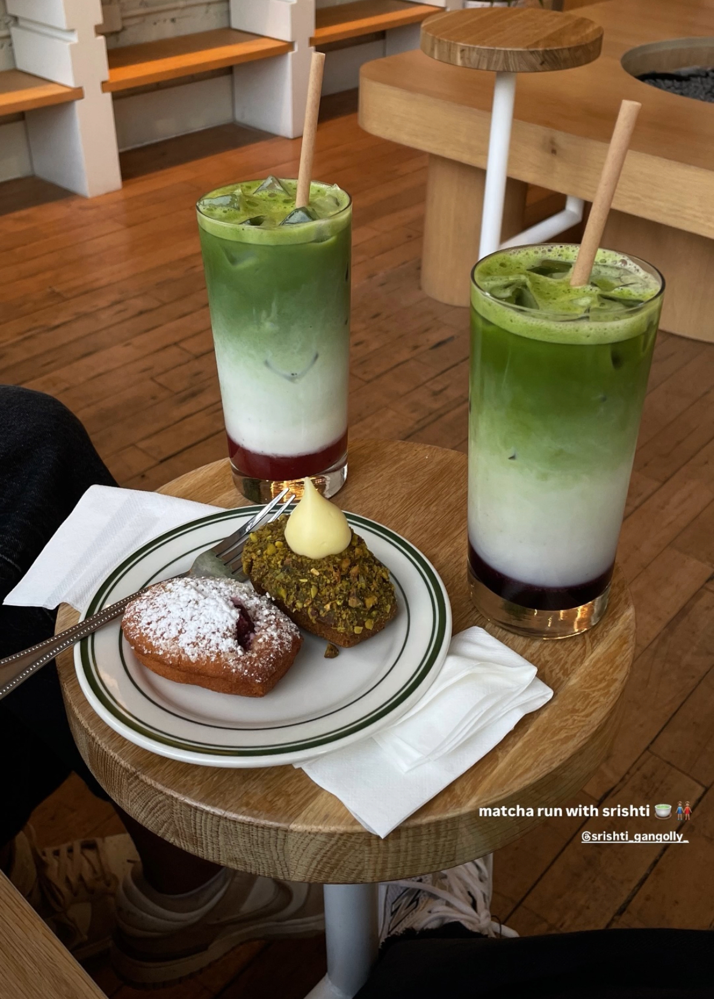
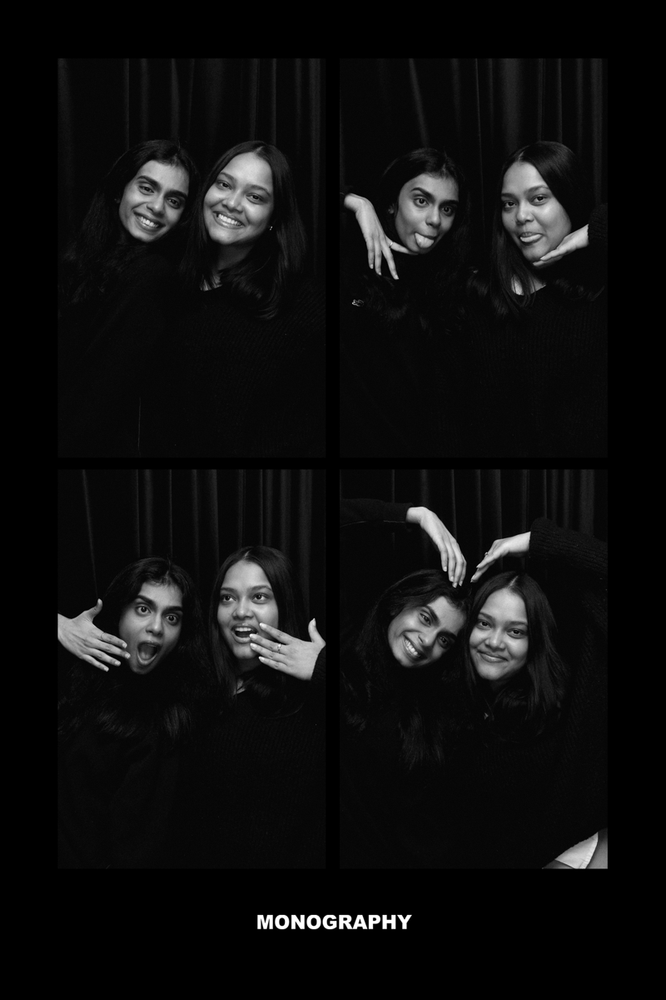
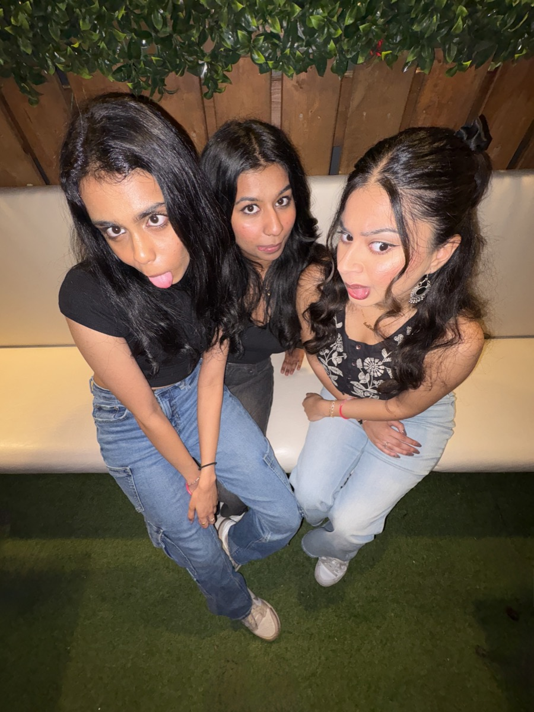

I'm currently completing a Bachelor of Science in Applied Mathematics with Geospatial Data Science and Statistics at the University of Toronto. Beyond lectures and problem sets, I've consistently gravitated toward roles where I could build and connect:
The roles evolved, but the core never changed: build visibility, create impact, and foster the right relationships.

A highlight was helping organize DeerHacks, a 36-hour hackathon run through MCSS. I contributed to two iterations, but DeerHacks III stood out most — 1,500+ applicants, 35+ events, a $15,000+ budget, and a 3,000+ follower community built from scratch. It was later named best event of the year 🏆 (kudos to the whole team!)
That same instinct to connect data with people carried into my internships. At Vosyn AI, as a Data Analytics and Strategy Intern, I dug into Google Analytics to understand user and investor behavior, built Tableau dashboards for real-time KPI tracking, and worked with Business Development and UI/UX teams to turn findings into growth-focused recommendations.

From there, I joined Intuit Canada as a Digital and Data Activation Intern on the TurboTax team, where the scale jumped — optimizing data integration across Customer Data Platforms and mobile attribution tools for a 5M+ user base, building custom audiences in Segment and Braze, and deploying Kochava SmartLinks for faster stakeholder insights. I also led the standardization of data organization across marketing teams, laying groundwork for more consistent, data-driven decisions at scale.




Outside of the professional scope, I take pride in teaching. I worked with high school students one-on-one across Advanced Placement (AP) and university-level Math and Statistics – identifying gaps, building targeted lesson plans, and staying invested long enough to see real progress. The grades mattered, but the real win was watching students start to think independently.
Currently
📚 reading
Tuesdays with Morrie by Mitch Albom
🎤 working on
Presentation Mastery Pathway, Level 4, Speech #1 @ Milton Escarpment Toastmasters
🌀 sidequesting
Getting more flexible, balanced & stronger through Hot Yoga & Mat Pilates
☕ obsessed with
Coconut matcha, Olivia Dean, moya mawhinney & lindsiann, summer sunsets from my room window
🎯 chasing
One last summer of funemployment before the real world hits: case studies & job applications, a fitness routine I'm still negotiating with, and daycations to Toronto for fulfilling my sidequest needs.
That curiosity has never really been separate from the way I work. At the end of the day, I care about leading with intention, showing up with structure, creativity, and a genuine desire to learn in every team I'm part of, regardless of the problem on the table.